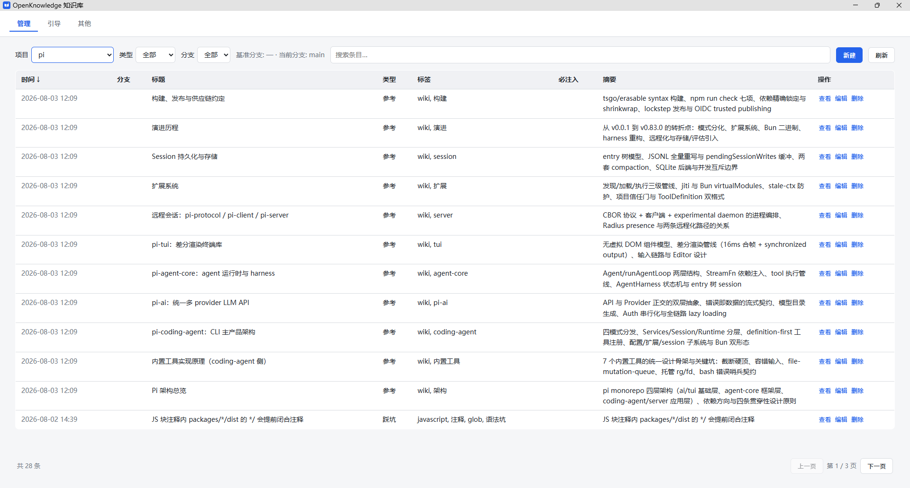
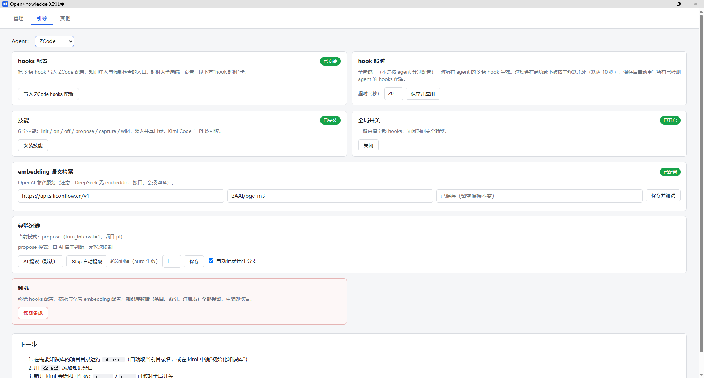
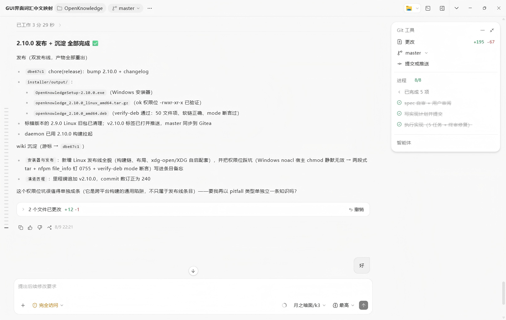

为 AI 编程助手提供的项目知识库——知识按项目隔离，通过各 AI 助手的 hooks/扩展自动注入 AI 上下文， 并能强制执行「改代码必须写变更日志」这类工作流规则。
自动识别系统并匹配安装包 · Windows / Linux .deb / Linux .tar.gz · 全部版本
为 AI 编程助手提供的项目知识库——知识按项目隔离，通过各 AI 助手的 hooks/扩展自动注入 AI 上下文， 并能强制执行「改代码必须写变更日志」这类工作流规则。
自动识别系统并匹配安装包 · Windows / Linux .deb / Linux .tar.gz · 全部版本
单二进制 Go CLI（ok），零运行时依赖
每个会话首次提问时，自动把项目的强制约定（mandatory 条目）全文 + 知识索引发送给 AI。
每次提问按关键词 + 向量语义混合检索，把最相关的知识条目注入上下文，如「git 提交规范」。
跟踪 AI 改过的文件；回合结束时发现改了代码却没写变更日志，就阻断并要求补齐。
Kimi Code、Pi、ZCode、Reasonix、opencode、Claude Code/CodePilot、Codex、Qoder CN（CLI 与 IDE）共用同一套知识库，可扩展适配器架构。
ok setup 自动完成 hooks 配置、技能安装与 embedding 配置；ok off / ok on 随时开关。
双击 exe 或 ok gui 打开管理界面；单个常驻进程统一承载 GUI 与 hook 请求，毫秒级转发。
Web GUI 三个标签页 + 实际会话中的经验沉淀



Windows 安装程序 / Linux 包 / 手动构建，任选其一
无需 Go 环境，默认装到 %LOCALAPPDATA%\Programs\OpenKnowledge（免管理员），卸载默认保留知识库数据。
# 从 Releases 下载后双击运行
OpenKnowledgeSetup-2.15.0.exe静态编译，零依赖。
# tar.gz
tar xzf openknowledge_*_linux_amd64.tar.gz
cd openknowledge_* && ./ok setup
# 或 .deb
sudo dpkg -i openknowledge_*_amd64.deb
ok setup需要 Go ≥ 1.25。
go build -o ok.exe ./cmd/ok # Windows
go build -o ok ./cmd/ok # Linux/macOS
./ok setup # 首次引导（幂等）